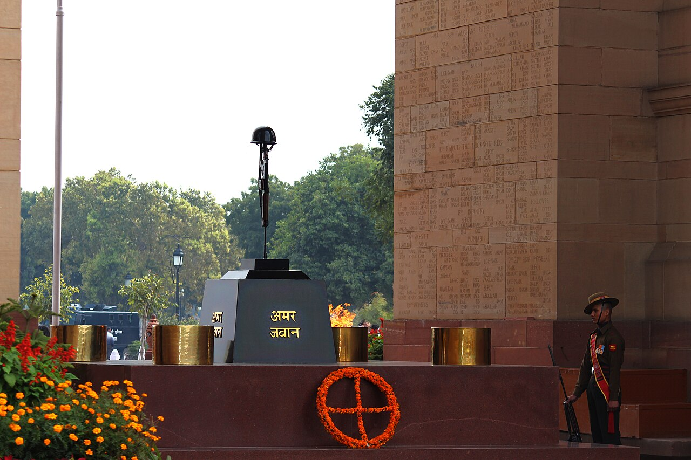

Intelligence
The Unknown Soldier: India's Silent Warriors

Not every soldier wears a uniform, and not every battlefield can be found on a map. Some of the nation's most important wars are fought in silence, by people whose successes are classified, whose names are never spoken, and whose sacrifices leave no trace in any history book.
My poem The Unknown Soldier is written for them: "Classified deeds, no story survives, yet nations breathe through their hidden lives."
The war in the shadows
Behind every army stands an apparatus of intelligence — organisations such as the Research and Analysis Wing (RAW), India's external intelligence agency, founded in 1968, and the Intelligence Bureau at home.[1] Their officers and agents work to warn the nation of threats before they strike, to understand its adversaries, and sometimes to act where no soldier can.
It is a profession with a cruel arithmetic. A success means an attack that never happened, a war that was quietly prevented, a disaster the public will never even learn it was spared. As the poem puts it: "A stolen document, a word unsaid, save millions from the tears unshed."
The battlefield knows the soldier's stride, but the spy's war is where truths collide.
No medals, no monuments

The frontline soldier may receive a gallantry award, a name on a memorial, a folded flag handed to his family. The intelligence operative who dies on a mission often receives none of these — because to honour them publicly would be to reveal the very secret they died to protect. "No medals gleam upon their chest," the poem says, "no hymns rise to recount their quest."
This is perhaps the purest form of the sacrifice my whole book is about: service so selfless that even recognition is surrendered. They give their lives and their names both.
Owed a quiet debt
We can never know the full story of what these silent warriors have done for the nation — that is precisely the point. But we can choose to be aware that the safety we take for granted has unseen authors, that "every dawn owes them its light."
The Unknown Soldier is not a single person. It is everyone whose courage kept us safe in ways we will never be told. To remember that they exist, even without their names, is the smallest tribute we can pay — and the only one they would ever accept.
Sources & further reading
All images via Wikimedia Commons, used under the licences shown in each caption.